From whaling-era hotel to Union School to Municipal Building
Every previously italicized phrase is highlighted and colour-coded by source. Where the source page is on file, clicking the highlight opens the scan.
To comprehend the imposing brick edifice that commands the east side of Main Street, one must begin with catastrophe, for this was a structure raised quite literally from ruin—the Municipal Building Erected as the Mansion House Hotel after the fire of 1845. The record fixes the date with unimpeachable brevity: the building Was built in 1846. This terse chronology is corroborated by architectural survey, which affirms that the Municipal Building, standing to the south of the American Hotel, was built in 1846 as the Mansion House Hotel.
This was no modest hostelry but rather the large and imposing Italianate-style Mansion House, a four-story brick hotel built in 1846 near the wharf at 55 Main Street. That such a grand enterprise should ascend so swiftly from the embers testifies to a civic optimism bordering on the audacious—an optimism of brick and ambition, for both the American Hotel and the Municipal Building are large and stately structures, and they reflect the faith that Sag Harborites had in the continuing prosperity of their town after the fire of 1845. Even now, the large brick building on the east side of Main Street stands as a monument to that confidence; one need only recall that it was built as a hotel at the cost of $17,000, a princely sum reflecting the grandeur its builders intended.
Yet audacity and solvency proved uneasy companions. The hotel passed through the hands of several keepers; it was doing business as a hotel kept by Ezekiel Mulford, a brief period, and by Samuel Fordham. The financial verdict, however, was unforgiving, for the hotel built after the big fire of 1845 by a stock company never paid as an investment. The shareholders who had wagered on perpetual prosperity were soon to be disappointed, their faith overtaken by the slow erosion of the whaling economy.
The Mansion House is forever bound to one of Sag Harbor's most enigmatic sons. The hotelkeeper Ezekiel Mulford sired a boy destined to become a philosopher of national stature, for Prentice Mulford, son of Ezekiel Mulford and the last in the male line of that old aristocratic family, was born at Sag Harbor in 1834 and spent his early years around the Mansion House where his father was then proprietor. The inheritance that passed to this shiftless young man proved a poisoned gift, for At the age of 14 Prentice Mulford inherited the hotel but, for unforseen reasons, went bankrupt four years later. Thus the heir to the grandest building on Main Street was undone before reaching manhood, his birthright dissolved in the same financial tides that drowned the stock company's hopes.
The building's distinctive crown, meanwhile, became a landmark among its architectural peers, those watchtowers of the whaling age; such cupolas may be seen on the Napier "Boxwood House," and the Mansion Hotel, the Municipal building. It was a silhouette knit into the very fabric of the village skyline.
As the whaling fortunes receded, so too did the value of Sag Harbor's real estate, and the Mansion House underwent the first of its remarkable metamorphoses. The depreciation was precipitous: the building was purchased by the town to use as a school in 1870 for a mere $7000; the decline in the value of Sag Harbor real estate was caused by the loss of the whaling industry, a major contributor to prosperity in the town from 1760 to the Civil War. A structure that had cost seventeen thousand dollars to raise was had for less than half that figure—a bargain born of economic collapse.
The pedagogical imperative was pressing. In 1862 Sag Harbor's three public school districts were combined into one, the Union School District, and the newly unified body required a single home. The Mansion House, a hotel on Main Street, was purchased in 1871 for use as the Union School. Before this consolidation, pupils had been scattered, housed since the founding of the school district in 1862 in smaller structures scattered around the village, but were brought together at last under one roof in the newly remodeled Union School. The locations of these antecedent schoolhouses are preserved in the record: the consolidated district previously served students in three old schoolhouses—on Madison Street, at Church and Sage Streets, and at Suffolk Street.
The acquisition itself was a triumph of philanthropy wedded to communal resolve. The Mansion House and the Baptist Church were two buildings considered large enough to house all the students of the district. Initially, both were turned down. But in 1871, when Dr. Frederick Crocker donated $5000 and the residents of the village raised $3000 more, the four-story Mansion House was acquired. This generosity would be enshrined within the building for posterity, in THE PLAQUE IN VILLAGE HALL RECOGNIZING THE DONORS WHO CONTRIBUTED TO MAKING THE BUILDING A SCHOOL IN 1871.
The physical conversion was documented with artisanal precision. In May 1871 the place underwent renovations to adapt it for school purposes, remodeling done under the supervision of Charles Hallett. The old battlement and fancy stone caps on the front of the building were removed. The roof was raised, and a three-foot overhang built, with John Chester doing the work. Remarkably, the building retained its mercantile heartbeat even in its scholarly guise—an arrangement constituting an early example of 'mixed use' development, retail stores continued to occupy the street floor of the repurposed old hotel. The configuration is set down plainly: Three stores occupied the ground floor of the building, and the upper stories were used for the classrooms. Three hundred and seventy-five students moved into the place in 1871, and for the next 34 years the Union School served as the village's principal educational facility. The scene is echoed elsewhere with slight variation, for Stores occupied the ground floor and 375 students filled the upper stories. Some accounts place the transformation slightly later, noting that In 1873 it became the Union School, and it now houses the village offices—a minor discrepancy in a story otherwise richly attested.
The school's very success demanded enlargement. In 1893 an annex to the Union School was built at the rear of the building and facing Division Street. Completed in September of that year, it was ready for occupancy the following month. The building was painted dark red and heated by pipes which ran from the main schoolhouse. The growth was a response to a swelling student body, for In 1893, as the student body grew, an annex was constructed on the rear facing Division Street. Yet even as the institution expanded outward, the aging fabric of the former hotel decayed inward. After the turn of the century, with the Union School building in great need of repair, the district was faced with the problem of finding another building or starting lengthy and extensive renovations. The condition was, by every account, dire—for by the turn-of-the-century, the building needed extensive repairs.
Salvation arrived in the formidable person of a benefactress whose name still resounds through the village. By the turn of the twentieth century, New York State threatened to condemn the old Union School and the village was desperate for a new school house. Mrs. Russell Sage came to the rescue in 1907, providing funds for a new building on Division Street to be named after her mother's ancestors, the Piersons. The Union School was then acquired by the village for use as the Municipal Building.
Her lineage lent the gesture a peculiarly local poignancy, for the philanthropist Mrs. Russell Sage had become a summer resident of the village by that time and took an interest in the welfare of the community. She was Margaret Olivia Slocum Sage, a descendant of the locally prominent Sage and Pierson families, was also the second wife of industrial tycoon Russell Sage; after his death in 1906, she began to underwrite the cost of many village projects, including construction of the new Pierson High School in 1907 that replaced the Union School. With the new school completed, the old hotel-turned-schoolhouse commenced its third incarnation: The old school building was then purchased by the village, remodeled and repurposed once again, this time as Sag Harbor's Municipal Building. The nominal character of the conveyance is preserved in municipal memory, for when the new Pierson High School was dedicated, the building, for a consideration of $1 was conveyed by the school district to the village, and is now used as a Municipal hall.
Before the structure fully assumed its civic mantle, it enjoyed a brief and feverish industrial life. The germ of the idea predated the vacancy, for As early as June 1902 representatives of the Brody & Funt Cloak Manufacturers of Brooklyn visited Sag Harbor, looking for a suitable building in which to open a cloak factory. That initial search faltered—A large place was needed with a gas engine to run their machinery, and at that time a suitable location was not found—but opportunity arrived once the students departed. Eight years later, in July 1910, New York cloak manufacturer Harry Kittzinger & Company came to Sag Harbor and leased the old Union School building, recently vacated when the students moved into the newly finished Pierson High School. They installed machinery, and jobs for 200 machine operators were anticipated. The requisite power was duly supplied, as The Sag Harbor Lighting Company installed a ten horsepower Kumberger gas engine, capable of running 50 sewing machines, and the first workers were hired.
The enterprise flared brightly and expired with equal speed. A year later the Kittzinger Cloak Factory enlarged their plant, with the hope of increasing their work force and payroll to $100,000 annually. Things looked bright, but by May 21, 1912 The Sag Harbor Express reported that nothing was doing at the cloak factory. It stated, "What has become of the cloak factory industry that expected a weekly payroll of $1000?" Apparently, their expectations were never realized, and the cloak factory soon closed its doors for good.
At last the structure settled into the role it would hold for generations—the LARGE BRICK BUILDING ON THE RIGHT ORIGINALLY BUILT AS THE MANSION HOUSE HOTEL, LATER CONVERTED INTO THE UNION SCHOOL, AND TODAY USED AS THE VILLAGE OF SAG HARBOR MUNICIPAL BUILDING. Its new vocation was twofold, uniting administration and public safety under one roof, for in 1907 Pierson High School was completed, and the building was transformed into the Municipal Building and fire department headquarters. A decade later the firefighting companies took up residence, as In 1917, the Phoenix and Gazelle companies moved into the Union School building on Main Street, which had been transformed to serve as Municipal Building and fire department headquarters. The civic sentinel still sounds its daily call, for An air whistle at the top still blows at noon every day and blasts the fire call.
The building's association with the village's firefighting fraternity runs deep. The Phoenix Hook and Ladder volunteers were photographed with Chief Augustus Kiernan (center) and their ladder wagon in 1908, and among the men whose faces survive in those photographs are Harry 'Skinny' Heinrichs, John McClain, Dr. Braem, and Chester Trimpin. The building remained the fulcrum of emergency response well into the modern era; the ambulance corps was pictured standing in front of the Gazelle Hose Company and the Municipal Building. In the early years, volunteers and the ambulance departed from the firehouse.
The Municipal Building became, in time, a vessel of the village's martial memory. In the Great War, Sag Harbor's men and women have served their country with distinction since the American Revolution, and in that conflict local boys enlisted in the 77th Infantry and in other services. To honor their sacrifice, a vast banner was unfurled across the building's brick face: After the war, a 35-by-55-foot flag bearing 342 stars with the embroidered initials of each soldier was hung from the Municipal Building in their honor. The small building at right is the police station. The image of this tribute endures in the photographic record as the Municipal Building with World War I service flag.
A generation hence, the building served as a literal watchtower against a new and distant enemy. The recollection is vivid: When the war was on, my sister Muriel and other girls from the high school went to the top of the Municipal Building and would watch for Japanese planes. They were called Spotters. From the rooftop that had once crowned a whaling-era hotel, young women scanned the skies for the planes of a global war.
The edifice that today anchors Main Street still speaks the formal grammar of its hotel origins. The scholarly reading is exacting: The roof of the Municipal Building is peaked on three sides of the square building, and this shape is echoed by the cupola. The main cornice and the cornice of the cupola have paired brackets, a common feature of Gothic Revival and Italianate buildings. There are drip lintels and clustered columns across the first story, as on the American Hotel.
Within the broader arc of Sag Harbor's preservation ethos, the Mansion House stands as the foremost exemplar, its transformation ranking as THE MOST AMBITIOUS AND LONG-LASTING ADAPTIVE REUSE PROJECT IN THE VILLAGE AT THE TIME. Indeed, the building bookends an entire tradition of thrift and reinvention, spanning the decades Between the preservation and adaptive reuse of the Mansion House hotel on Main Street in 1871 to serve as the Union School, to conversion of the old Academy of the Sacred Heart of Mary into the Sag Harbor Elementary School in 1968. This tradition, which long preceded the formal designation of any historic district, was at its heart an ethic of saving what was useful, sometimes enabling new community members to establish themselves within the fabric of the village. It was, in the fullest sense, a philosophy of improving or modifying existing buildings to meet the needs of a new owner or a changing population—a philosophy of which the brick hotel at 55 Main Street remains the village's most eloquent and enduring embodiment.
Every highlighted quote, in order of appearance, correlated to its underlying source. The swatch matches the highlight colour in the text.
| # | Verbatim Quote (abbreviated) | Source (Author, Title, Year, Page) |
|---|---|---|
| 1 | “Erected as the Mansion House Hotel after the fire of 1845” | Pine, Sag Harbor Past Present and Future, 1973, p. 34 |
| 2 | “Was built in 1846” | Unknown Author, CRIS |
| 3 | “to the south of the American Hotel, was built in 1846 as the Mansion House Hotel” | Weisburg & Donneson, Guide To Sag Harbor, 1975, p. 57 [page scan] |
| 4 | “the large and imposing Italianate-style Mansion House, a four-story brick hotel built in 1846 near the wharf at 55 Main Street” | Studenroth, Preserving Sag Harbor, 2023, p. 8 [page scan] |
| 5 | “are large and stately structures, and they reflect the faith that Sag Harborites had in the continuing prosperity of their town after the fire of 1845” | Weisburg & Donneson, Guide To Sag Harbor, 1975, p. 57 [page scan] |
| 6 | “was built as a hotel at the cost of $17,000” | Lightfoot, Suffolk County Long Island, in Early Photographs, 1984, p. 33 [page scan] |
| 7 | “doing business as a hotel kept by Ezekiel Mulford, a brief period, and by Samuel Fordham” | Sleight, Sag Harbor in Earlier Days, 1997, p. 170 [page scan] |
| 8 | “the hotel built after the big fire of 1845 by a stock company never paid as an investment” | Sleight, Sag Harbor in Earlier Days, 1997, p. 170 [page scan] |
| # | Verbatim Quote (abbreviated) | Source (Author, Title, Year, Page) |
|---|---|---|
| 9 | “Prentice Mulford, son of Ezekiel Mulford and the last in the male line of that old aristocratic family, was born at Sag Harbor in 1834 and spent his early ye…” | Zaykowski, Sag Harbor: The Story of an American Beauty, 1991, p. 201 [page scan] |
| 10 | “shiftless young man” | Zaykowski, Sag Harbor: The Story of an American Beauty, 1991, p. 201 |
| 11 | “At the age of 14 Prentice Mulford inherited the hotel but, for unforseen reasons, went bankrupt four years later” | Zaykowski, Sag Harbor: The Story of an American Beauty, 1991, p. 201 |
| 12 | “may be seen on the Napier 'Boxwood House,' and the Mansion Hotel, the Municipal building” | Sleight, Sag Harbor in Earlier Days, 1997, p. 55 |
| # | Verbatim Quote (abbreviated) | Source (Author, Title, Year, Page) |
|---|---|---|
| 13 | “was purchased by the town to use as a school in 1870 for a mere $7000; the decline in the value of Sag Harbor real estate was caused by the loss of the whali…” | Lightfoot, Suffolk County Long Island, in Early Photographs, 1984, p. 33 [page scan] |
| 14 | “were combined into one, the Union School District” | Eames, Oh That's Another Story, 2015, p. 93 [page scan] |
| 15 | “a hotel on Main Street, was purchased in 1871 for use as the Union School” | Eames, Oh That's Another Story, 2015, p. 93 [page scan] |
| 16 | “since the founding of the school district in 1862 in smaller structures scattered around the village, but were brought together at last under one roof in the…” | Studenroth, Preserving Sag Harbor, 2023, p. 8 [page scan] |
| 17 | “previously served students in three old schoolhouses—on Madison Street, at Church and Sage Streets, and at Suffolk Street” | Roth, Images of America Sag Harbor, 2018, p. 54 [page scan] |
| 18 | “were two buildings considered large enough to house all the students of the district. Initially, both were turned down. But in 1871, when Dr. Frederick Crock…” | Zaykowski, Sag Harbor: The Story of an American Beauty, 1991, p. 166 [page scan] |
| 19 | “THE PLAQUE IN VILLAGE HALL RECOGNIZING THE DONORS WHO CONTRIBUTED TO MAKING THE BUILDING A SCHOOL IN 1871” | Studenroth, Preserving Sag Harbor, 2023, p. 8 [page scan] |
| 20 | “In May 1871 the place underwent renovations to adapt it for school purposes, remodeling done under the supervision of Charles Hallett. The old battlement and…” | Zaykowski, Sag Harbor: The Story of an American Beauty, 1991, p. 166 [page scan] |
| 21 | “an early example of 'mixed use' development, retail stores continued to occupy the street floor of the repurposed old hotel” | Studenroth, Preserving Sag Harbor, 2023, p. 8 [page scan] |
| 22 | “Three stores occupied the ground floor of the building, and the upper stories were used for the classrooms. Three hundred and seventy-five students moved int…” | Zaykowski, Sag Harbor: The Story of an American Beauty, 1991, p. 166 [page scan] |
| 23 | “Stores occupied the ground floor and 375 students filled the upper stories” | Roth, Images of America Sag Harbor, 2018, p. 54 [page scan] |
| 24 | “In 1873 it became the Union School, and it now houses the village offices” | Weisburg & Donneson, Guide To Sag Harbor, 1975, p. 57 [page scan] |
| # | Verbatim Quote (abbreviated) | Source (Author, Title, Year, Page) |
|---|---|---|
| 25 | “In 1893 an annex to the Union School was built at the rear of the building and facing Division Street. Completed in September of that year, it was ready for …” | Zaykowski, Sag Harbor: The Story of an American Beauty, 1991, p. 166 [page scan] |
| 26 | “In 1893, as the student body grew, an annex was constructed on the rear facing Division Street” | Studenroth, Preserving Sag Harbor, 2023, p. 8 [page scan] |
| 27 | “After the turn of the century, with the Union School building in great need of repair, the district was faced with the problem of finding another building or…” | Zaykowski, Sag Harbor: The Story of an American Beauty, 1991, p. 166 [page scan] |
| 28 | “by the turn-of-the-century, the building needed extensive repairs” | Studenroth, Preserving Sag Harbor, 2023, p. 8 [page scan] |
| # | Verbatim Quote (abbreviated) | Source (Author, Title, Year, Page) |
|---|---|---|
| 29 | “threatened to condemn the old Union School and the village was desperate for a new school house. Mrs. Russell Sage came to the rescue in 1907, providing fund…” | Eames, Oh That's Another Story, 2015, p. 93 [page scan] |
| 30 | “had become a summer resident of the village by that time and took an interest in the welfare of the community” | Studenroth, Preserving Sag Harbor, 2023, p. 8 [page scan] |
| 31 | “a descendant of the locally prominent Sage and Pierson families, was also the second wife of industrial tycoon Russell Sage; after his death in 1906, she beg…” | Studenroth, Preserving Sag Harbor, 2023, p. 8 [page scan] |
| 32 | “The old school building was then purchased by the village, remodeled and repurposed once again, this time as Sag Harbor's Municipal Building.” | Studenroth, Preserving Sag Harbor, 2023, p. 8 [page scan] |
| 33 | “when the new Pierson High School was dedicated, the building, for a consideration of $1 was conveyed by the school district to the village, and is now used a…” | Sleight, Sag Harbor in Earlier Days, 1997, p. 170 [page scan] |
| # | Verbatim Quote (abbreviated) | Source (Author, Title, Year, Page) |
|---|---|---|
| 34 | “As early as June 1902 representatives of the Brody & Funt Cloak Manufacturers of Brooklyn visited Sag Harbor, looking for a suitable building in which to ope…” | Zaykowski, Sag Harbor: The Story of an American Beauty, 1991, p. 306 |
| 35 | “A large place was needed with a gas engine to run their machinery, and at that time a suitable location was not found” | Zaykowski, Sag Harbor: The Story of an American Beauty, 1991, p. 306 [page scan] |
| 36 | “Eight years later, in July 1910, New York cloak manufacturer Harry Kittzinger & Company came to Sag Harbor and leased the old Union School building, recently…” | Zaykowski, Sag Harbor: The Story of an American Beauty, 1991, p. 306 [page scan] |
| 37 | “The Sag Harbor Lighting Company installed a ten horsepower Kumberger gas engine, capable of running 50 sewing machines, and the first workers were hired.” | Zaykowski, Sag Harbor: The Story of an American Beauty, 1991, p. 306 [page scan] |
| 38 | “A year later the Kittzinger Cloak Factory enlarged their plant, with the hope of increasing their work force and payroll to $100,000 annually. Things looked …” | Zaykowski, Sag Harbor: The Story of an American Beauty, 1991, p. 306 [page scan] |
| # | Verbatim Quote (abbreviated) | Source (Author, Title, Year, Page) |
|---|---|---|
| 39 | “LARGE BRICK BUILDING ON THE RIGHT ORIGINALLY BUILT AS THE MANSION HOUSE HOTEL, LATER CONVERTED INTO THE UNION SCHOOL, AND TODAY USED AS THE VILLAGE OF SAG HA…” | Studenroth, Preserving Sag Harbor, 2023, p. 2 [page scan] |
| 40 | “Pierson High School was completed, and the building was transformed into the Municipal Building and fire department headquarters” | Roth, Images of America Sag Harbor, 2018, p. 54 [page scan] |
| 41 | “In 1917, the Phoenix and Gazelle companies moved into the Union School building on Main Street, which had been transformed to serve as Municipal Building and…” | Roth, Images of America Sag Harbor, 2018, p. 100 [page scan] |
| 42 | “An air whistle at the top still blows at noon every day and blasts the fire call” | Roth, Images of America Sag Harbor, 2018, p. 54 [page scan] |
| 43 | “were photographed with Chief Augustus Kiernan (center) and their ladder wagon in 1908” | Roth, Images of America Sag Harbor, 2018, p. 100 [page scan] |
| 44 | “Harry 'Skinny' Heinrichs, John McClain, Dr. Braem, and Chester Trimpin” | Roth, Images of America Sag Harbor, 2018, p. 100 [page scan] |
| 45 | “in front of the Gazelle Hose Company and the Municipal Building. In the early years, volunteers and the ambulance departed from the firehouse.” | Roth, Images of America Sag Harbor, 2018, p. 65 |
| # | Verbatim Quote (abbreviated) | Source (Author, Title, Year, Page) |
|---|---|---|
| 46 | “men and women have served their country with distinction since the American Revolution” | Roth, Images of America Sag Harbor, 2018, p. 80 [page scan] |
| 47 | “enlisted in the 77th Infantry and in other services” | Roth, Images of America Sag Harbor, 2018, p. 80 [page scan] |
| 48 | “After the war, a 35-by-55-foot flag bearing 342 stars with the embroidered initials of each soldier was hung from the Municipal Building in their honor. The …” | Roth, Images of America Sag Harbor, 2018, p. 80 [page scan] |
| 49 | “Municipal Building with World War I service flag” | Zaykowski, Sag Harbor: The Story of an American Beauty, 1991, p. 96 |
| 50 | “When the war was on, my sister Muriel and other girls from the high school went to the top of the Municipal Building and would watch for Japanese planes. The…” | Tobier, Voices of Sag Harbor, 2007, p. 146 |
| # | Verbatim Quote (abbreviated) | Source (Author, Title, Year, Page) |
|---|---|---|
| 51 | “The roof of the Municipal Building is peaked on three sides of the square building, and this shape is echoed by the cupola. The main cornice and the cornice …” | Weisburg & Donneson, Guide To Sag Harbor, 1975, p. 57 [page scan] |
| 52 | “THE MOST AMBITIOUS AND LONG-LASTING ADAPTIVE REUSE PROJECT IN THE VILLAGE AT THE TIME” | Studenroth, Preserving Sag Harbor, 2023, p. 2 [page scan] |
| 53 | “Between the preservation and adaptive reuse of the Mansion House hotel on Main Street in 1871 to serve as the Union School, to conversion of the old Academy …” | Studenroth, Preserving Sag Harbor, 2023, p. 3 [page scan] |
| 54 | “saving what was useful, sometimes enabling new community members to establish themselves within the fabric of the village” | Studenroth, Preserving Sag Harbor, 2023, p. 3 [page scan] |
| 55 | “improving or modifying existing buildings to meet the needs of a new owner or a changing population” | Studenroth, Preserving Sag Harbor, 2023, p. 3 [page scan] |
13 scanned pages, one per cited source page. Each lists the highlighted quotes drawn from it.
Quotes drawn from this page: 3 5 24 51
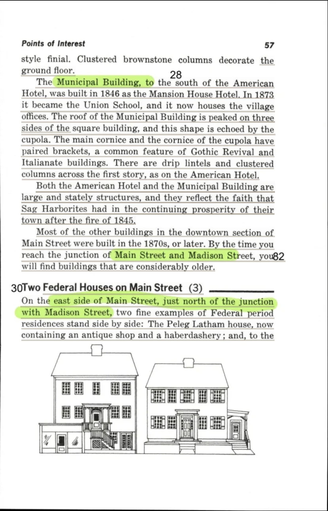
Quotes drawn from this page: 4 16 19 21 26 28 30 31 32
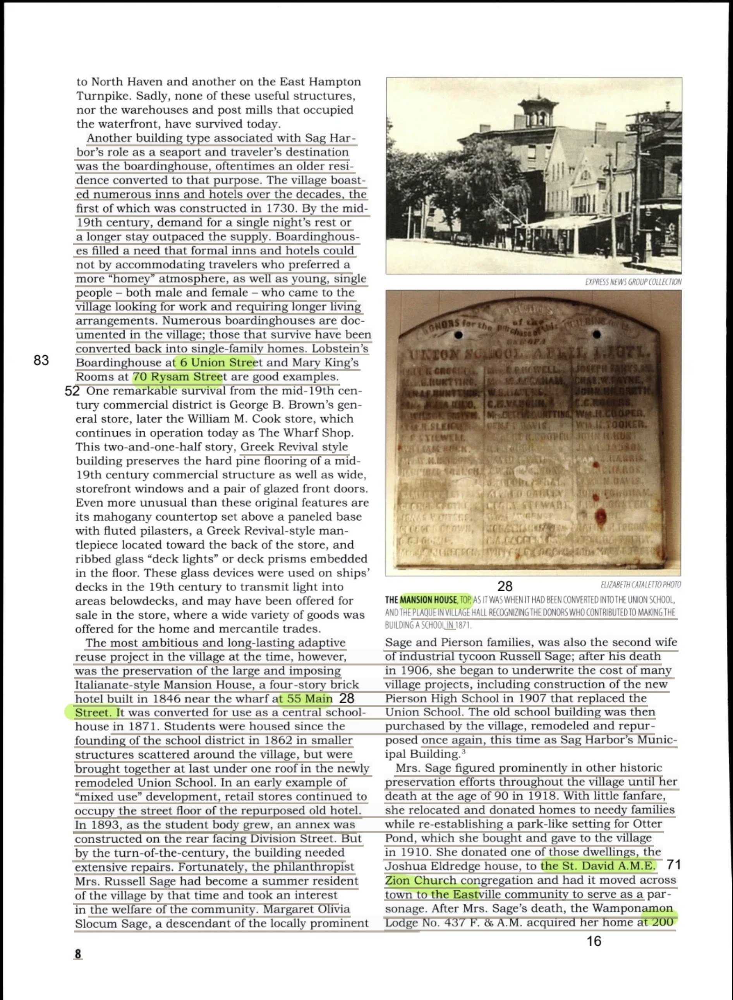
Quotes drawn from this page: 6 13
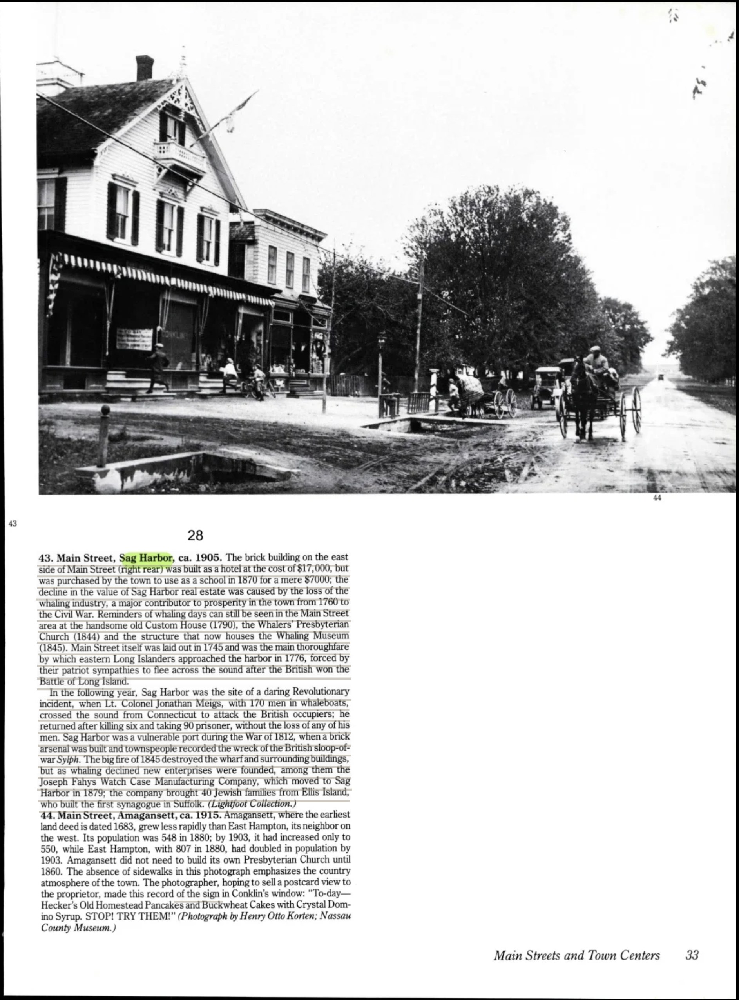
Quotes drawn from this page: 7 8 33
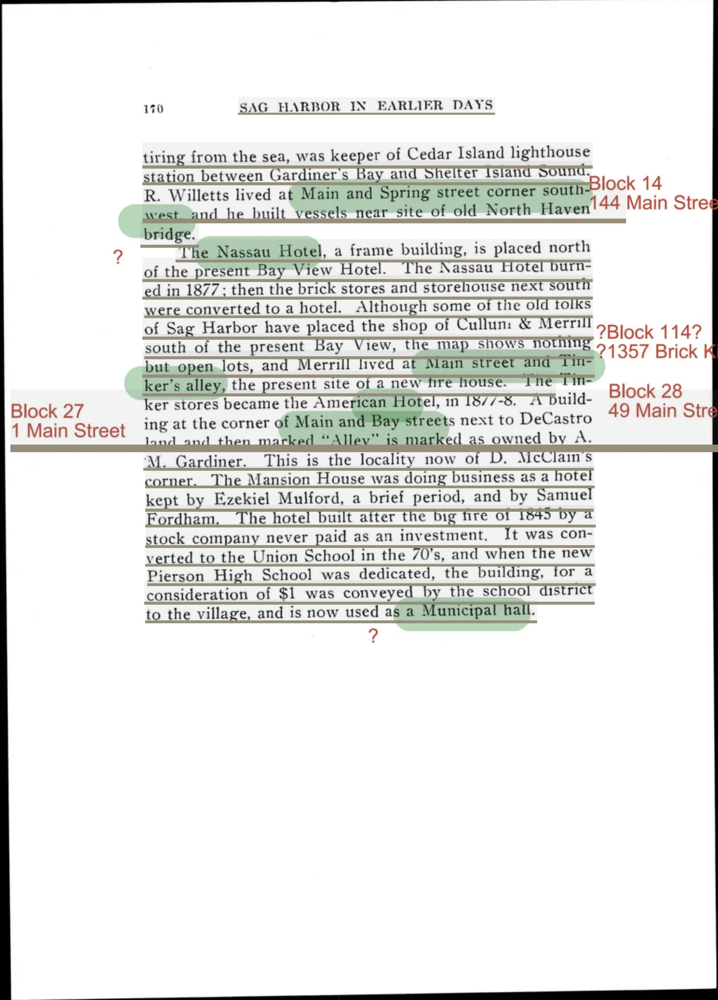
Quotes drawn from this page: 9
Quote 10 is not printed on this leaf; quote 11 begins here and finishes on p. 202. Neither is linked to this page.
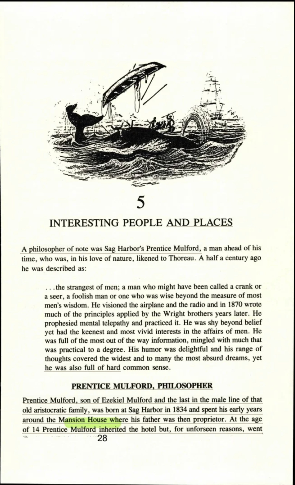
Quotes drawn from this page: 14 15 29
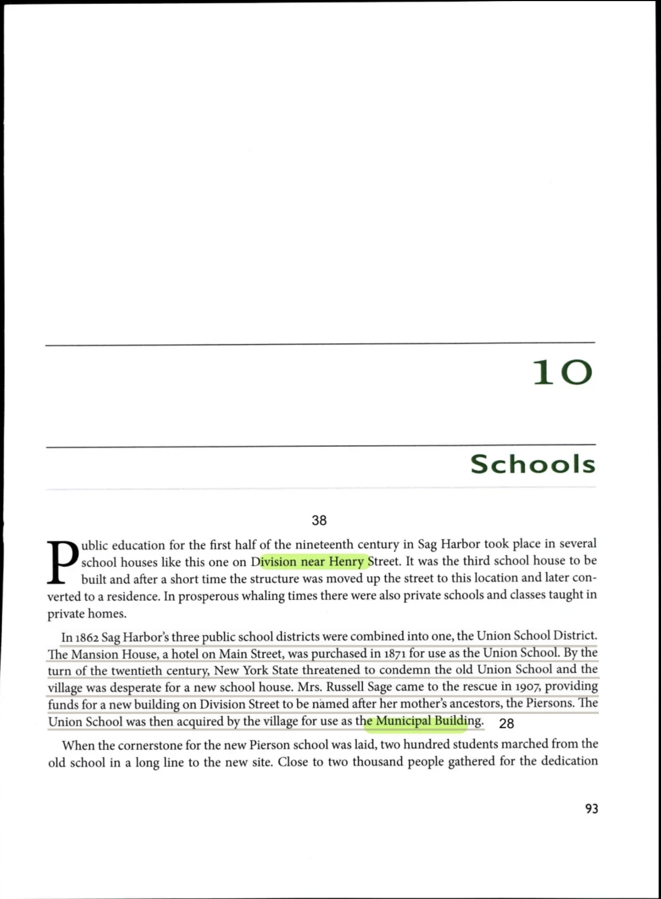
Quotes drawn from this page: 17 23 40 42
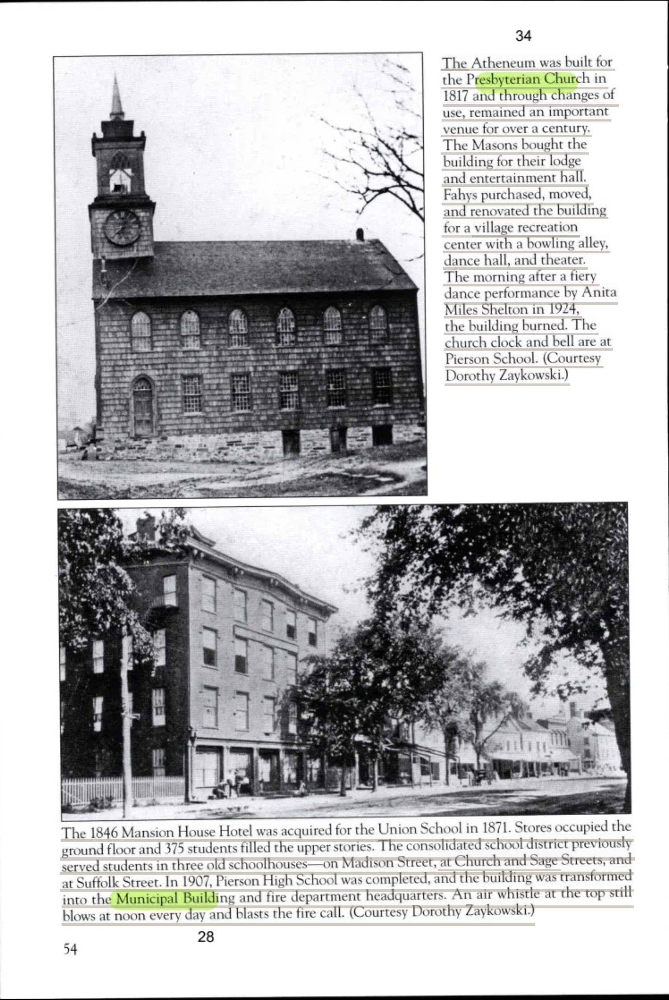
Quotes drawn from this page: 18 20 22 25 27
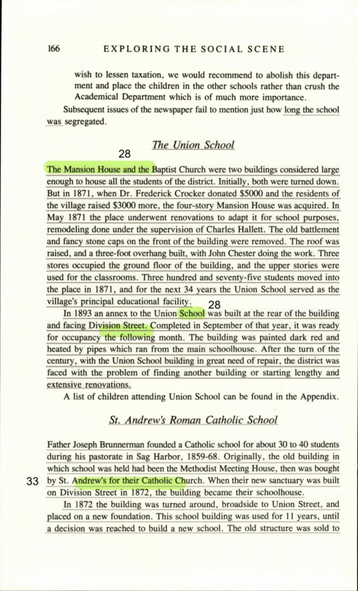
Quotes drawn from this page: 35 36 37 38
Quote 34 begins on the facing leaf, p. 305, which is not on file. It is not linked to this page.
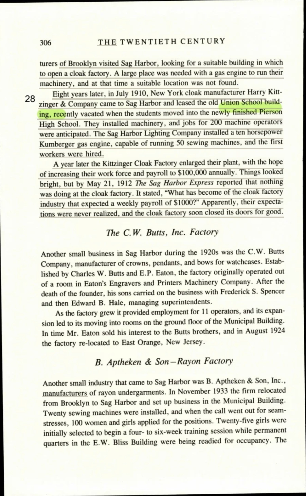
Quotes drawn from this page: 39 52
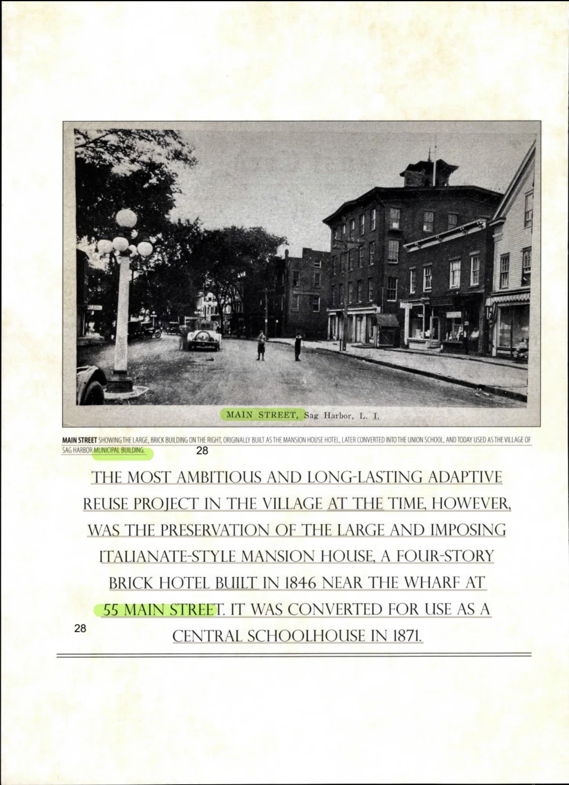
Quotes drawn from this page: 41 43 44
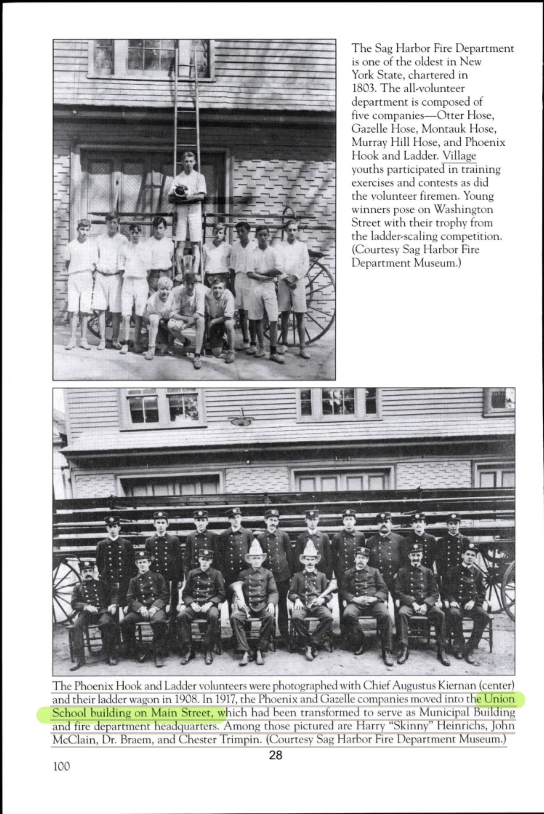
Quotes drawn from this page: 46 47 48
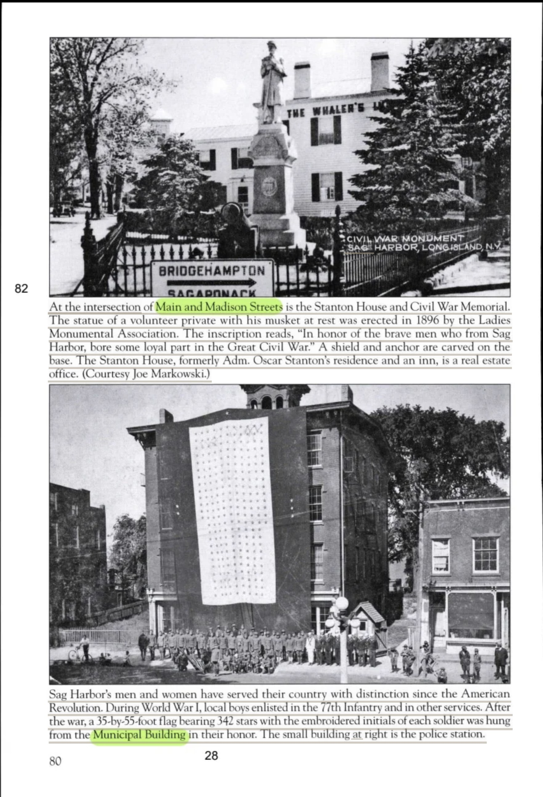
Quotes drawn from this page: 53 54 55
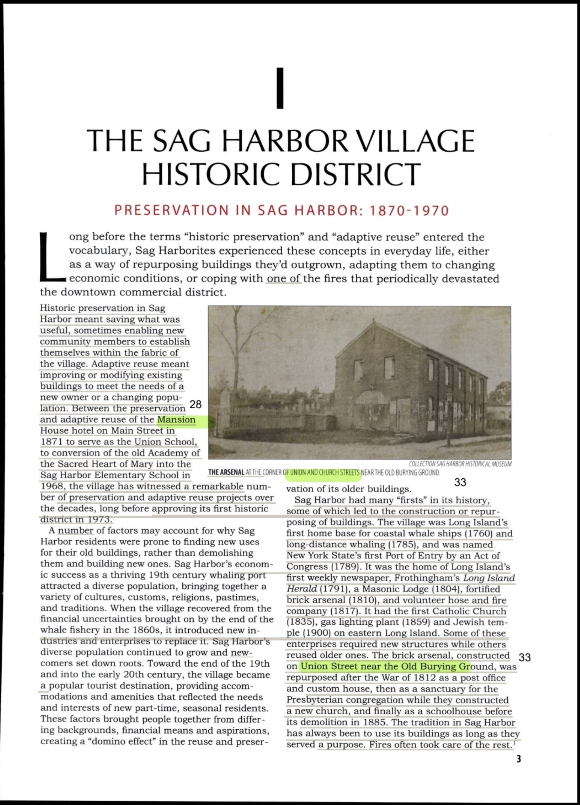